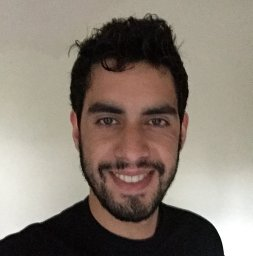
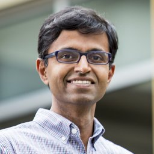

|
Workshop on Social Robot NavigationEvent to be held in conjunction with Robotics: Science and Systems 2020 (RSS 2020) |
|---|
Organizers
|  | Christoforos Mavrogiannis Research Associate Paul G. Allen School of Computer Science & Engineering University of Washington Chris Mavrogiannis is a Postdoctoral research associate in the Paul G. Allen School of Computer Science & Engineering at the University of Washington, working with Prof. Sidd Srinivasa at the Personal Robotics Lab. He is broadly interested in the algorithmic foundations of robotics, with a particular emphasis on the design of efficient, safe and robust motion planning algorithms for multi-robot robot navigation, manipulation, and human-robot interaction applications. He is passionate about enabling robots to integrate seamlessly in human environments. Chris holds M.S. and Ph.D. degrees from Cornell University, and a diploma in Mechanical Engineering from the National Technical University of Athens. |
|
|---|---|---|
| Pete Trautman Senior Scientist Honda Research Institute USA Pete Trautman received his B.S. in Physics and Applied Mathematics from Baylor University in 2000. He then entered the United States Air Force, serving as a program manager and researcher at the Sensors Directorate. In 2012, he completed his Ph.D. in Control and Dynamical Systems at Caltech. His thesis research focused on robot navigation in dense human crowds, the result of which was a probabilistic model of human robot cooperation, a 6 month case study in Caltech’s student cafeteria and an ICRA 2013 Best Paper Finalist award. Pete has since worked in Boeing factory automation and defense contracting. He now works at the Honda Research Institute USA on robot navigation in human crowds. |
||
 |
Leila Takayama Associate Professor Department of Computational Media University of California Santa Cruz Leila Takayama is an associate professor of Computational Media at UC Santa Cruz. Prior to joining UCSC in 2016, she was a senior user experience researcher at GoogleX, and was a research scientist and area manager for human-robot interaction at Willow Garage. With a background in Psychology, Cognitive Science, and Human-Computer Interaction, she examines human encounters with new technologies. Dr. Takayama completed her PhD in Communication at Stanford University. She also holds a PhD minor in Psychology from Stanford, a master's degree in Communication from Stanford, and bachelor's of arts degrees in Psychology and Cognitive Science from UC Berkeley. |
|
|  | Siddhartha S. Srinivasa Boeing Endowed Professor Paul G. Allen School of Computer Science & Engineering University of Washington Siddhartha S. Srinivasa is the Boeing Endowed Professor at the School of Computer Science and Engineering, University of Washington. He earned his PhD in robotics from Carnegie Mellon University. He works on robotic manipulation, with the goal of enabling robots to perform complex manipulation tasks under uncertainty and clutter, with and around people. To this end, he founded the Personal Robotics Lab in 2005. He is also passionate about building end-to-end systems (HERB, ADA, HRP3, CHIMP, Andy, among others) that integrate perception, planning, and control in the real world. Understanding the interplay between system components has helped produce state-of-the-art algorithms for robotic manipulation, motion planning, object recognition, and pose estimation (MOPED), dense 3-D modeling (CHISEL, now used by Google Project Tango), and mathematical models for human–robot collaboration. |
|